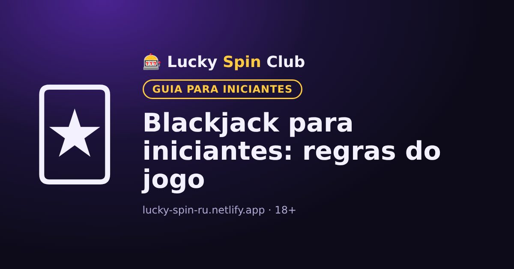

Blackjack para iniciantes: regras do jogo

Atualizado: 6 de novembro de 2026
O blackjack é um jogo de cartas contra o dealer. É um dos poucos jogos de cassino em que as decisões do jogador influenciam o resultado.
Objetivo do jogo
Somar mais pontos que o dealer sem passar de 21. Se passar de 21, você estoura e perde a aposta.
Valor das cartas
- Do 2 ao 10: o valor da própria carta.
- J, Q e K: 10 pontos.
- Ás: 1 ou 11, o que for melhor.
Blackjack é um ás e uma carta de 10 pontos nas duas primeiras cartas. Normalmente paga 3:2: com uma aposta de R$20 você ganha R$30.
Decisões do jogador
- Pedir (Hit): receber mais uma carta.
- Parar (Stand): não pedir mais cartas.
- Dobrar (Double): dobrar a aposta e receber exatamente mais uma carta.
- Dividir (Split): se as duas cartas forem iguais, separá-las em duas mãos.
Como o dealer joga
O dealer segue regras fixas: normalmente pede cartas até chegar a 17 e então para. Ele não toma decisões próprias.
Estratégia básica
Existem tabelas de estratégia básica que mostram a melhor decisão para cada combinação das suas cartas com a carta aberta do dealer. Elas reduzem a vantagem do cassino, mas não a eliminam. Dá para treinar sem risco no modo demo.
Quer experimentar? O cadastro leva cerca de um minuto.
🎁 Cadastrar e pegar o bônusPerguntas frequentes
Quanto vale o ás no blackjack?
O ás vale 1 ou 11 pontos, conforme for melhor para a mão.
O que é um blackjack?
É um ás e uma carta de 10 pontos nas duas primeiras cartas. Normalmente paga 3:2.
A estratégia básica funciona?
Sim: ajuda a tomar as decisões ideais e reduz a vantagem do cassino, mas não a elimina por completo.